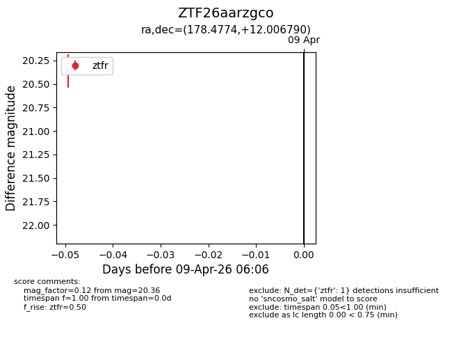
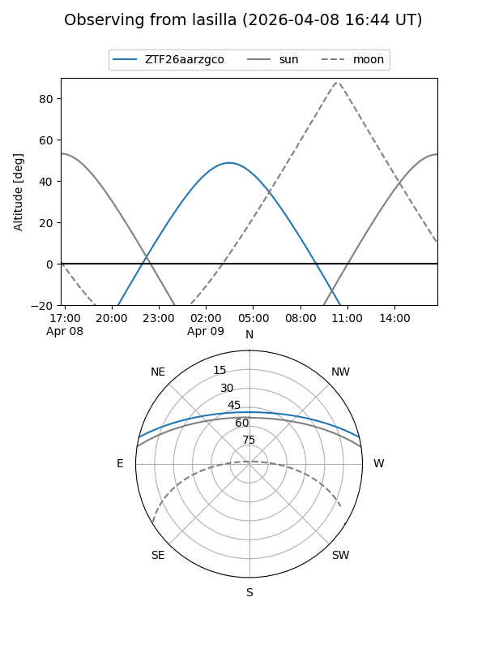
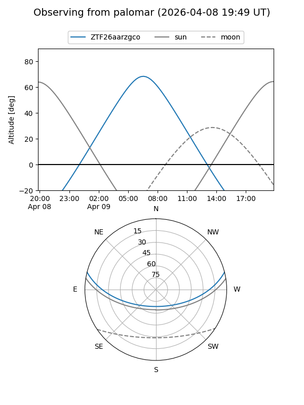

ZTF26aarzgco
Target ZTF26aarzgco at 2026-04-09 06:13
Aliases and brokers:
FINK: link
Lasair: link
ALeRCE: link
alt names
ZTF26aarzgco (ztf,fink_ztf)
Coordinates:
equatorial (ra, dec) = 178.4774,+12.00679
equatorial (HMS+DMS) = 11:53:54.57,+12:00:24.44
galactic (l, b) = (258.3923,+69.73385)
Flags:
Photometry:
last ztfr=20.36
1 ztfr detections
Lightcurve

Visibility


Additional plots